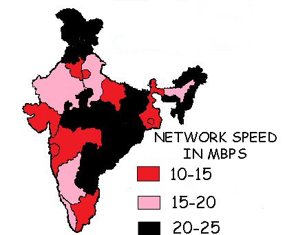

NETWORK SPEED ACROSS INDIA

NETWORK & DISTRIBUTION
Made for everyone:-
At Red Telecommunications, we know that every call matters
andMevery message is high-priority. So whether you are
catching up with family and friends or writing up a
business plan, we know it comes first. Red
believes in the importance of communication and
helps you along with its far-reaching network that is
made for uninterrupted and clear conversations-a network
that's made for everything.
Made for more:-
More is better! A total of 127,000 sites and 30,000
3G sites, across the country ensure a superb network
experience. Highly trained technicians, engineers and
project managers work 365 nights a year to create a
network you can trust every day. Our overall coverage
constitutes a total of 84 percent, while our rural
penetration is around 76 percent. The Red network
assures you enjoy great internet speeds and high call
quality wherever you are in the country.
Made for travel:-
At Red, we ensure voice clarity no matter how noisy the
environment. Our networks make certain that ambient noise
does not interfere with your call experience. Our advanced
noise suppression algorithms and our reliable IP networks work
together to deliver the best voice quality on each and every
call. No matter where you are, you never have to worry. We are
present across the country through our 1.8 million recharging
outlets, over 9000 exclusive and 34 angel stores.
Made for endless talking:-
No more call drops! Owing to our advanced 'Soft Switching
technology', where if one node goes down, the other can be used
automatically, our network allows you to continue on those long
lasting conversations.
Made for your convenience:-
Making video calls, watching live TV and enjoying high-speed
internet is superfast, thanks to our spectrum-optimised site
selection and the mobile access to our network of inter linked towers.
The network has been optimised the network extensively so that you can
make calls, send emails and messages simultaneously on both 3G and 2G.
MOBILE NETWORK TROUBLESHOOTING STEPS
Voice:-
Coverage Issue-(Weak/Poor signal)
1. Turn off any other devices that produces electromagnetic induction, viz.
Router/Modem as it may conflict with network signals.
2. Restart your mobile handset.
3. Try inserting the SIM in a different handset and check if your issue is
resolved.
4. Still No Fix->Contact us.We are happy to help you!
Voice Quality Issue-(Crossconnection, Echo, Loop Back, No sound, Blank, Mute call,
Call Drops).
Network down - (No network signal, Sim registration failed)
No Access to incoming/outgoing calls and SMS Issue - (Unable to make/receive calls or
unable send/ receive MS)
Data:-
Coverage Issue-(Weak/Poor signal)
1. Turn off any other devices that produces electromagnetic induction, viz.
Router/Modem as it may conflict with network signals.
2. Restart your mobile handset.
3. Try inserting the SIM in a different handset and check if your issue is resolved.
4. Still No Fix->Contactus.We are happy to help you!
Data Speed - (Slow speed)
Video Call Quality Issue - (Buffering, Disconnects, Does not play)
Configuration-(No symbol, No connectivity)